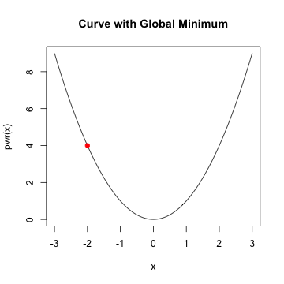
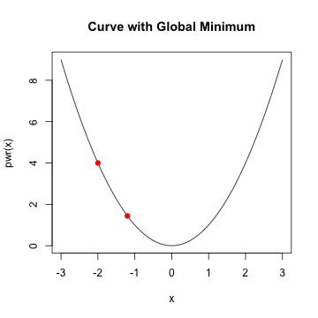
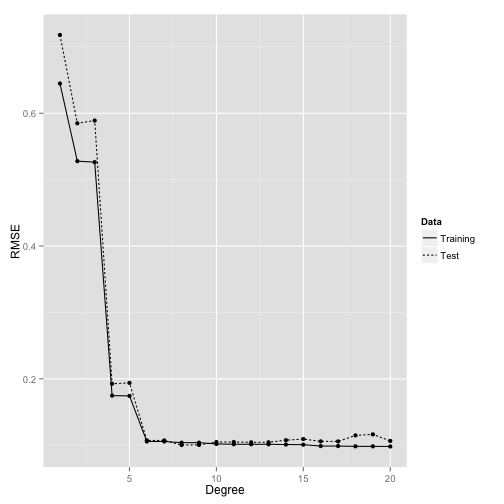

- Machine Learning Overview
- Exploring Data
- Nearest Neighbors
- Naive Bayes
- Measuring Performance
- Linear Regression
Machine Learning with R
Ilan Man
Strategy Operations @ Squarespace
Agenda
Machine Learning Overview
What is it?
- Field of study interested in transforming data into intelligent actions
- Intersection of statistics, available data and computing power
- It is NOT data mining
- Data mining is an exploratory exercise, whereas most machine learning has a known answer
- Data mining is a subset of machine learning (unsupervised)
Machine Learning Overview
Uses
- Predict outcome of elections
- Email filtering - spam or not
- Credit fraud prediction
- Image processing
- Customer churn
- Customer subscription rates
Machine Learning Overview
How do machines learn?
- Data input
- Provides a factual basis for reasoning
- Abstraction
- Generalization
Machine Learning Overview
Abstraction
- Assign meaning to the data
- Formulas, graphs, logic, etc...
- Your model
- Fitting model is called training
Machine Learning Overview
Generalization
- Turn abstracted knowledge into something that can be utilized
- Model user heuristics since it cannot see every example
- When hueristics are systematically wrong, the algorithm has a bias
- Very simple models have high bias
- Some bias is good - let's us ignore the noise
Machine Learning Overview
Generalization
- After training, the model is tested on unseen data
- Perfect generalization is exceedingly rare
- Partly due to noise
- Measurement error
- Change in user behavior
- Incorrect data, erroneous values, etc...
- Fitting too closesly to the noise leads to overfitting
- Complex models have high variance
- Good on training, bad on testing
Machine Learning Overview
Steps to apply Machine Learning
- Collect data
- Explore and preprocess data
- Majority of the time is spent in this stage
- Train the model
- Specific tasks will inform which algorithm is appropriate
- Evaluate model performance
- Performance measures depend on use case
- Improve model performance as necessary
Machine Learning Overview
Choosing an algorithm
- Consider input data
- An example is one data point that the machine is intended to learn
- A feature is a characteristic of the example
- e.g. Number of times the word "viagra" appears in an email
- For classification problems, a label is the example's classification
- Most algorithms require data in matrix format because Math said so
- Features can be numeric, categorical/nominal or ordinal
Machine Learning Overview
Types of algorithms
- Supervised
- Discover relationship between known, target feature and other features
- Predictive
- Classification and numeric prediction tasks
- Unsupervised
- Unkown answer
- Descriptive
- Pattern discovery and clustering into groups
- Requires human intervention to interpret clusters
Machine Learning Overview
Summary
- Generalization and Abstraction
- Overfitting vs underfitting
- The right algorithm will be informed by the problem to be solved
- Terminology
Exploring Data
Exploring and understanding data
- Load and explore the data
data(iris)
# inspect the structure of the dataset
str(iris)
## 'data.frame': 150 obs. of 5 variables:
## $ Sepal.Length: num 5.1 4.9 4.7 4.6 5 5.4 4.6 5 4.4 4.9 ...
## $ Sepal.Width : num 3.5 3 3.2 3.1 3.6 3.9 3.4 3.4 2.9 3.1 ...
## $ Petal.Length: num 1.4 1.4 1.3 1.5 1.4 1.7 1.4 1.5 1.4 1.5 ...
## $ Petal.Width : num 0.2 0.2 0.2 0.2 0.2 0.4 0.3 0.2 0.2 0.1 ...
## $ Species : Factor w/ 3 levels "setosa","versicolor",..: 1 1 1 1 1 1 1 1 1 1 ...
Exploring Data
Exploring and understanding data
# summarize the data - five number summary
summary(iris[,1:4])
## Sepal.Length Sepal.Width Petal.Length Petal.Width
## Min. :4.30 Min. :2.00 Min. :1.00 Min. :0.1
## 1st Qu.:5.10 1st Qu.:2.80 1st Qu.:1.60 1st Qu.:0.3
## Median :5.80 Median :3.00 Median :4.35 Median :1.3
## Mean :5.84 Mean :3.06 Mean :3.76 Mean :1.2
## 3rd Qu.:6.40 3rd Qu.:3.30 3rd Qu.:5.10 3rd Qu.:1.8
## Max. :7.90 Max. :4.40 Max. :6.90 Max. :2.5
Exploring Data
Exploring and understanding data
- Measures of central tendency: mean and median
- Mean is sensitive to outliers
- Trimmed mean
- Median is resistant

Exploring Data
Exploring and understanding data
- Measures of dispersion
- Range is the
max()-min() - Interquartile range (IQR) is the
Q3-Q1 - Quantile
- Range is the
quantile(iris$Sepal.Length, probs = c(0.10,0.50,0.99))
10% 50% 99%
4.8 5.8 7.7
Exploring Data
Visualizing - Boxplots
- Lets you see the spread in the data

Exploring Data
Visualizing - histograms
- Each bar is a 'bin'
- Height of bar is the frequency (count of) that bin
- Some distributions are normally distributed (bell shaped) or skewed (heavy tails)

Exploring Data
Visualizing - scatterplots
- Useful for visualizing bivariate relationships (2 variables)
## Error: could not find function "ggplot"
Exploring Data
Summary
- Measures of central tendency and dispersion
- Visualizing data using histograms, boxplots, scatterplots
- Skewed vs normally distributed data
K-Nearest Neighbors
Classification using kNN
- Understanding the algorithm
- Data Preparation
- Case study: diagnosing breast cancer
- Summary
K-Nearest Neighbors
The Concept
- Things that are similar are probably of the same class
- Good for: when it's difficult to define, but "you know it when you see it"
- Bad for: when a clear distinction doesn't exist
K-Nearest Neighbors
The Algorithm
## Warning: package 'plyr' was built under R version 3.0.2
## Error: could not find function "ggplot"
K-Nearest Neighbors
The Algorithm
## Error: could not find function "ggplot"
## function (x, y, ...)
## UseMethod("plot")
## <bytecode: 0x7ff9423da2d8>
## <environment: namespace:graphics>
K-Nearest Neighbors
The Algorithm
## Error: could not find function "geom_point"
- Suppose we had a new point with Sepal Length of 7 and Petal Length of 4
- Which species will it probably belong to?
K-Nearest Neighbors
The Algorithm
- Calculate its nearest neighbor
- Euclidean distance
- \(dist(p,q) = \sqrt{(p_1-q_1)^2+(p_2-q_2)^2+ ... + (p_n-q_n)^2}\)
- Closest neighbor -> 1-NN
- 3 closest neighbors -> 3-NN.
- Winner is the majority class of all neighbors
K-Nearest Neighbors
The Algorithm
- Calculate its nearest neighbor
- Euclidean distance
- \(dist(p,q) = \sqrt{(p_1-q_1)^2+(p_2-q_2)^2+ ... + (p_n-q_n)^2}\)
- Closest neighbor -> 1-NN
- 3 closest neighbors -> 3-NN.
- Winner is the majority class of all neighbors
- Why not just fit to all data points?
K-Nearest neighbors
Bias vs. Variance
- Fitting to every point results in an overfit model
- High variance problem
- Fitting to only 1 point results in an underfit model
- High bias problem
- Choosing the right \(k\) is a balance between bias and variance
- Rule of thumb: \(k = \sqrt{N}\)
K-Nearest neighbors
Data preparation
- Classify houses based on prices and square footage
library(scales) # format ggplot() axis
## Warning: package 'scales' was built under R version 3.0.2
price <- seq(300000,600000,by=10000)
size <- price/1000 + rnorm(length(price),10,50)
houses <- data.frame(price,size)
ex <- ggplot(houses,aes(price,size))+geom_point()+scale_x_continuous(labels = comma)+
xlab("Price")+ylab("Size")+ggtitle("Square footage vs Price")
## Error: could not find function "ggplot"
K-Nearest neighbors
Data Preparation
## Error: object 'ex' not found
K-Nearest neighbors
Data Preparation
## Error: object 'ex' not found
## Error: object 'center_plot' not found
K-Nearest neighbors
Data Preparation
## Error: object 'center_plot' not found
## Error: object 'new_plot' not found
K-Nearest neighbors
Data Preparation
# 1) using loops
loop_dist <- 0
for(i in 1:nrow(houses)){
loop_dist[i] <- sqrt(sum((new_p-houses[i,])^2))
}
# 2) vectorized
vec_dist <- sqrt(rowSums(t(new_p-t(houses))^2))
closest <- data.frame(houses[which.min(vec_dist),])
print(closest)
price size
11 4e+05 441.8
K-Nearest Neighbors
Data Preparation
## Error: object 'new_plot' not found
K-Nearest Neighbors
Data Preparation
## Error: object 'new_plot' not found
K-Nearest Neighbors
Data Preparation
- Feature scaling. Two common approaches:
- min-max normalization
- \(X_{new} = \frac{X-min(X)}{max(X) - min(X)}\)
- z-score standardization
- \(X_{new} = \frac{X-mean(X)}{sd(X)}\)
- Euclidean distance doesn't discriminate between important and noisy features
- can add weights
K-Nearest Neighbors
Data Preparation
new_house <- scale(houses)
new_new <- c((new[1]-mean(houses[,1]))/sd(houses[,1]),(new[2]-mean(houses[,2]))/sd(houses[,2]))
Error: object of type 'closure' is not subsettable
vec_dist <- sqrt(rowSums(t(new_new-t(new_house))^2))
Error: object 'new_new' not found
which.min(vec_dist)
[1] 11
K-Nearest Neighbors
Data Preparation
## Error: object 'new_plot' not found
K-Nearest Neighbors
Lazy learner
- kNN doesn't actually learn anything!
- Stores training data and applies it - verbatim - to new examples
- Known as instance-based learning
- Non-parametric learning method
- Harder for us to understand how the classifier is using the data
- However kNN finds natural patterns
- Don't need to fit aribtrarily to a model
K-Nearest Neighbors
Case study
data <- read.table('http://archive.ics.uci.edu/ml/machine-learning-databases/breast-cancer-wisconsin/wdbc.data', sep=',', stringsAsFactors=FALSE, header=FALSE)
# first column has the ID which is not useful
data <- data[,-1]
# names taken from the .names file online
n <- c("radius","texture","perimeter","area","smoothness","compactness",
"concavity","concave_points","symmetry","fractal")
ind <- c("mean","std","worst")
headers<-as.character()
for(i in ind){
headers<-c(headers,paste(n,i))
}
names(data)<-c("diagnosis",headers)
K-Nearest Neighbors
Case study
str(data[,1:10])
'data.frame': 569 obs. of 10 variables:
$ diagnosis : chr "M" "M" "M" "M" ...
$ radius mean : num 18 20.6 19.7 11.4 20.3 ...
$ texture mean : num 10.4 17.8 21.2 20.4 14.3 ...
$ perimeter mean : num 122.8 132.9 130 77.6 135.1 ...
$ area mean : num 1001 1326 1203 386 1297 ...
$ smoothness mean : num 0.1184 0.0847 0.1096 0.1425 0.1003 ...
$ compactness mean : num 0.2776 0.0786 0.1599 0.2839 0.1328 ...
$ concavity mean : num 0.3001 0.0869 0.1974 0.2414 0.198 ...
$ concave_points mean: num 0.1471 0.0702 0.1279 0.1052 0.1043 ...
$ symmetry mean : num 0.242 0.181 0.207 0.26 0.181 ...
K-Nearest Neighbors
Case study
# inspect remaining data more closely
prop.table(table(data$diagnosis)); head(data)[2:6]
B M
0.6274 0.3726
radius mean texture mean perimeter mean area mean smoothness mean
1 17.99 10.38 122.80 1001.0 0.11840
2 20.57 17.77 132.90 1326.0 0.08474
3 19.69 21.25 130.00 1203.0 0.10960
4 11.42 20.38 77.58 386.1 0.14250
5 20.29 14.34 135.10 1297.0 0.10030
6 12.45 15.70 82.57 477.1 0.12780
K-Nearest Neighbors
Case study
# scale each numeric value
scaled_data <- as.data.frame(lapply(data[,-1], scale))
scaled_data <- cbind(diagnosis=data$diagnosis, scaled_data)
head(scaled_data[2:6])
radius.mean texture.mean perimeter.mean area.mean smoothness.mean
1 1.0961 -2.0715 1.2688 0.9835 1.5671
2 1.8282 -0.3533 1.6845 1.9070 -0.8262
3 1.5785 0.4558 1.5651 1.5575 0.9414
4 -0.7682 0.2535 -0.5922 -0.7638 3.2807
5 1.7488 -1.1508 1.7750 1.8246 0.2801
6 -0.4760 -0.8346 -0.3868 -0.5052 2.2355
K-Nearest Neighbors
Case study
library(class) # get k-NN classifier
Warning: package 'class' was built under R version 3.0.2
predict_1 <- knn(train = scaled_data[,2:31], test = scaled_data[,2:31],
cl = scaled_data[,1],
k = floor(sqrt(nrow(scaled_data))))
table(predict_1)
predict_1
B M
378 191
K-Nearest Neighbors
Case study
pred_B <- which(predict_1=="B")
actual_B <- which(scaled_data[,1]=="B")
pred_M <- which(predict_1=="M")
actual_M <- which(scaled_data[,1]=="M")
true_positive <- sum(pred_B %in% actual_B)
true_negative <- sum(pred_M %in% actual_M)
false_positive <- sum(pred_B %in% actual_M)
false_negative <- sum(pred_M %in% actual_B)
conf_mat <- matrix(c(true_positive,false_positive,false_negative,true_negative),nrow=2,ncol=2)
acc <- sum(diag(conf_mat))/sum(conf_mat)
tpr <- conf_mat[1,1]/sum(conf_mat[1,])
tn <- conf_mat[2,2]/sum(conf_mat[2,])
K-Nearest Neighbors
Case study
acc tpr tn
0.9596 0.9972 0.8962
tp fp
fn 356 1
tn 22 190
- Is that right?
K-Nearest Neighbors
Case study
# create randomized training and testing sets
total_n <- nrow(scaled_data)
# train on 2/3 of the data
train_ind <- sample(total_n,total_n*2/3)
train_labels <- scaled_data[train_ind,1]
test_labels <- scaled_data[-train_ind,1]
train_set <- scaled_data[train_ind,2:31]
test_set <- scaled_data[-train_ind,2:31]
K-Nearest Neighbors
Case study
library(class)
predict_1 <- knn(train = train_set, test = test_set, cl = train_labels,
k = floor(sqrt(nrow(train_set))))
table(predict_1)
predict_1
B M
129 61
K-Nearest Neighbors
Case study
pred_B <- which(predict_1=="B")
test_B <- which(test_labels=="B")
pred_M <- which(predict_1=="M")
test_M <- which(test_labels=="M")
true_positive <- sum(pred_B %in% test_B)
true_negative <- sum(pred_M %in% test_M)
false_positive <- sum(pred_B %in% test_M)
false_negative <- sum(pred_M %in% test_B)
conf_mat <- matrix(c(true_positive,false_negative,false_positive,true_negative),nrow=2,ncol=2)
acc <- sum(diag(conf_mat))/sum(conf_mat)
tpr <- conf_mat[1,1]/sum(conf_mat[1,])
tn <- conf_mat[2,2]/sum(conf_mat[2,])
K-Nearest Neighbors
Case study
acc tpr tn
0.9526 0.9380 0.9836
Actual B Actual M
Pred B 121 8
Pred M 1 60
K-Nearest Neighbors
Case study
library(caret)
Warning: package 'caret' was built under R version 3.0.2
Loading required package: lattice
Warning: package 'lattice' was built under R version 3.0.2
Loading required package: ggplot2
Warning: package 'ggplot2' was built under R version 3.0.2
confusionMatrix(predict_1,test_labels)$table
Warning: package 'e1071' was built under R version 3.0.2
Reference
Prediction B M
B 121 8
M 1 60
K-Nearest Neighbors
Case study
Exercise: Find the Accuracy for various value of k.
Hint 1 - look at the `knn` function parameters
K-Nearest Neighbors
Case study
k_params <- c(1,3,5,10,15,20,25,30,40)
perf_acc <- NULL
per <- NULL
for(i in k_params){
predictions <- knn(train = train_set,
test = test_set,
cl = train_labels,
k = i)
conf <- confusionMatrix(predictions,test_labels)$table
perf_acc <- sum(diag(conf))/sum(conf)
per <- rbind(per,c(i, perf_acc,conf[[1]],conf[[3]],conf[[2]],conf[[4]]))
}
K-Nearest Neighbors
Case study
## Warning: package 'xtable' was built under R version 3.0.2
| K | Acc | TP | FP | FN | TN | |
|---|---|---|---|---|---|---|
| 1 | 1.00 | 0.95 | 119.00 | 7.00 | 3.00 | 61.00 |
| 2 | 3.00 | 0.96 | 121.00 | 6.00 | 1.00 | 62.00 |
| 3 | 5.00 | 0.95 | 120.00 | 7.00 | 2.00 | 61.00 |
| 4 | 10.00 | 0.96 | 120.00 | 5.00 | 2.00 | 63.00 |
| 5 | 15.00 | 0.96 | 121.00 | 7.00 | 1.00 | 61.00 |
| 6 | 20.00 | 0.95 | 121.00 | 8.00 | 1.00 | 60.00 |
| 7 | 25.00 | 0.95 | 121.00 | 8.00 | 1.00 | 60.00 |
| 8 | 30.00 | 0.96 | 122.00 | 7.00 | 0.00 | 61.00 |
| 9 | 40.00 | 0.96 | 122.00 | 8.00 | 0.00 | 60.00 |
K-Nearest Neighbors
Summary
- kNN is a lazy learning algorithm
- Assigns the majority class of the k data points closest to the new data
- Ensure all features are on the same scale
- Pros
- Can be applied to data from any distribution
- Simple and intuitive
- Cons
- Choosing k requires trial and error
- Testing step is computationally expensive (unlike parametric models)
- Needs a large number of training samples to be useful
Naive Bayes
Probabilistic learning
- Probability and Bayes Theorem
- Understanding Naive Bayes
- Case study: filtering mobile phone spam
Naive Bayes
Probability and Bayes Theorem
- Terminology:
probabilityeventtrial- e.g. 1 flip of a coin, 1 toss of a die
- \(X_{i}\) is an event
- The set of all events is \(\{X_{1},X_{2},...,X_{n}\}\)
- The probability of an event is the frequency of its occurrence
- \(0 \leq P(X) \leq 1\)
- \(P(\sum_{i=1}^{n} X_{i}) = \sum_{i=1}^{n} P(X_{i})\)
Naive Bayes
Probability and Bayes Theorem
- \(A \cap B\) is "A and B"
- Independent events
- \(P(A \cap B) = P(A) \times P(B)\)
- \(A \mid B\) is "A given B"
- Conditional probability
- \(P(A \mid B) = \frac{P(A \cap B)}{P(B)}\)
Naive Bayes
Probability and Bayes Theorem
- Independent events
- \(A \cap B\) is "A and B"
- \(P(A \cap B) = P(A) \times P(B)\)
- Conditional probability
- \(A \mid B\) is "A given B"
- \(P(A \mid B) = \frac{P(A \cap B)}{P(B)}\)
- \(P(B \mid A) = \frac{P(B \cap A)}{P(A)}\)
- \(P(B \mid A) \times P(A) = P(B \cap A)\)
Naive Bayes
Probability and Bayes Theorem
- Independent events
- \(A \cap B\) is "A and B"
- \(P(A \cap B) = P(A) \times P(B)\)
- Conditional probability
- \(A \mid B\) is "A given B"
- \(P(A \mid B) = \frac{P(A \cap B)}{P(B)}\)
- \(P(B \mid A) = \frac{P(B \cap A)}{P(A)}\)
- \(P(B \mid A) \times P(A) = P(B \cap A)\)
- but... \(P(B \cap A) = P(A \cap B)\)
Naive Bayes
Probability and Bayes Theorem
- Independent events
- \(A \cap B\) is "A and B"
- \(P(A \cap B) = P(A) \times P(B)\)
- Conditional probability
- \(A \mid B\) is "A given B"
- \(P(A \mid B) = \frac{P(A \cap B)}{P(B)}\)
- \(P(B \mid A) = \frac{P(B \cap A)}{P(A)}\)
- \(P(B \mid A) \times P(A) = P(B \cap A)\)
- but... \(P(B \cap A) = P(A \cap B)\)
- so.... \(P(A \mid B) = \frac{P(B \mid A) \times P(A)}{P(B)}\) <-- Bayes Theorem!
Naive Bayes
Bayes Example
- A decision should be made using all available information
- As new information enters, the decision might be changed
- Example: Email filtering
- spam and non-spam (AKA ham)
- classify emails depending on what words they contain
- \(P(spam \mid CASH!)\) = ?
Naive Bayes
Bayes Example
# data frame with frequency of emails with the word "cash"
bayes_ex <- data.frame(cash_yes=c(10,3,13),
cash_no=c(20,67,87),
total=c(30,70,100),
row.names=c('spam','ham','total'))
bayes_ex
cash_yes cash_no total
spam 10 20 30
ham 3 67 70
total 13 87 100
Naive Bayes
Bayes Example
- Recall Bayes Theorem:
- \(P(A \mid B) = \frac{P(B \mid A) \times P(A)}{P(B)}\)
- A = event that email is spam
- B = event that "CASH" exists in the email
\(P(spam \mid cash=yes) = P(cash=yes \mid spam) \times \frac{P(spam)}{P(cash=yes)}\)
Naive Bayes
Bayes Example
- Recall Bayes Theorem:
- \(P(A \mid B) = \frac{P(B \mid A) \times P(A)}{P(B)}\)
- A = event that email is spam
- B = event that "CASH" exists in the email
\(P(spam \mid cash=yes) = P(cash=yes \mid spam) \times \frac{P(spam)}{P(cash=yes)}\)
\(P(cash = yes \mid spam) = \frac{10}{30}\)
\(P(spam) = \frac{30}{100}\)
\(P(cash = yes) = \frac{13}{100}\)
= \(\frac{10}{30} \times \frac{\frac{30}{100}}{\frac{13}{100}} = 0.769\)
Naive Bayes
Bayes Example
- Recall Bayes Theorem:
- \(P(A \mid B) = \frac{P(B \mid A) \times P(A)}{P(B)}\)
- A = event that email is spam
- B = event that "CASH" exists in the email
\(P(spam \mid cash=yes) = P(cash=yes \mid spam) \times \frac{P(spam)}{P(cash=yes)}\)
\(P(cash = yes \mid spam) = \frac{10}{30}\)
\(P(spam) = \frac{30}{100}\)
\(P(cash = yes) = \frac{13}{100}\)
= \(\frac{10}{30} \times \frac{\frac{30}{100}}{\frac{13}{100}} = 0.769\)
Exercise: \(P(ham \mid cash = no)\) = ?
Naive Bayes
Why Naive?
- Assumes all features are independent and equally important
- NB still performs very well out of the box
cash_yes cash_no furniture_yes furniture_no total
spam 10 20 6 24 30
ham 3 67 20 50 70
total 13 87 26 74 100
\(P(spam \mid cash=yes \cap furniture=no) = \frac{P(cash=yes \cap furniture=no \mid spam) \times P(spam)}{P(cash=yes \cap furniture=no)}\)
Naive Bayes
Why Naive?
- As features increase, formula becomes very expensive
- Solution: assume each feature is independent of any other feature, given they are in the same class
- Independence formula: \(P(A \cap B) = P(A) \times P(B)\)
- Called "class conditional independence":
- \(P(spam \mid cash=yes \cap furniture=no) =\)
Naive Bayes
Why Naive?
- As features increase, formula becomes very expensive
- Solution: assume each feature is independent of any other feature, given they are in the same class
- Independence formula: \(P(A \cap B) = P(A) \times P(B)\)
- Called "class conditional independence":
- \(P(spam \mid cash=yes \cap furniture=no) =\)
- \(\frac{P(cash=yes \mid spam) \times P(furniture=no \mid spam) \times P(spam)}{P(cash=yes) \times P(furniture=no)}\)
Naive Bayes
Why Naive?
- As features increase, formula becomes very expensive
- Solution: assume each feature is independent of any other feature, given they are in the same class
- Independence formula: \(P(A \cap B) = P(A) \times P(B)\)
- Called "class conditional independence":
- \(P(spam \mid cash=yes \cap furniture=no) =\)
- \(\frac{P(cash=yes \mid spam) \times P(furniture=no \mid spam) \times P(spam)}{P(cash=yes) \times P(furniture=no)} =\)
- \(\frac{\frac{10}{30} \times \frac{24}{30}}{\frac{13}{100} \times \frac{74}{100}}\)
Naive Bayes
Why Naive?
- As features increase, formula becomes very expensive
- Solution: assume each feature is independent of any other feature, given they are in the same class
- Independence formula: \(P(A \cap B) = P(A) \times P(B)\)
- Called "class conditional independence":
- \(P(spam \mid cash=yes \cap furniture=no) = \frac{P(cash=yes \mid spam) \times P(furniture=no \mid spam) \times P(spam)}{P(cash=yes) \times P(furniture=no)}\) = \(\frac{\frac{10}{30} \times \frac{24}{30} \times \frac{30}{100}}{\frac{13}{100} \times \frac{74}{100}}\)
Exercise: \(P(ham \mid cash=yes \cap furniture=no) = ?\)
Naive Bayes
The Laplace Estimator
cash_yes cash_no furniture_yes furniture_no party_yes party_no total
spam 10 20 6 24 3 27 30
ham 3 67 20 50 0 70 70
total 13 87 26 74 3 97 100
\(P(ham \mid cash=yes \cap party=yes) = \frac{P(cash=yes \mid ham) \times P(party=yes \mid ham) \times P(ham)}{P(cash=yes) \times P(party=yes)} = ?\)
Naive Bayes
The Laplace Estimator
cash_yes cash_no furniture_yes furniture_no party_yes party_no total
spam 10 20 6 24 3 27 30
ham 3 67 20 50 0 70 70
total 13 87 26 74 3 97 100
\(P(ham \mid cash=yes \cap party=yes) = \frac{P(cash=yes \mid ham) \times P(party=yes \mid ham) \times P(ham)}{P(cash=yes) \times P(party=yes)} = ?\) \(\frac{\frac{3}{70} \times \frac{0}{70} \times \frac{70}{100}}{\frac{13}{100} \times \frac{3}{100}} = 0\)
- if party appears in an email, there's no chance it could be ham...really??
Naive Bayes
The Laplace Estimator
\(P(ham \mid cash=yes \cap party=yes) =\) \(\frac{P(cash=yes \mid ham) \times P(party=yes \mid ham) \times P(ham)}{P(cash=yes) \times P(party=yes)} =\) \(\frac{\frac{3}{70} \times \frac{0}{70} \times \frac{70}{100}}{\frac{13}{100} \times \frac{3}{100}} = 0\)
- if party appears in an email, there's no chance it could be ham...really??
- To get around 0's, apply Laplace estimator
- add 1 to every feature
Naive Bayes
Case Study: SMS spam filtering
sms_data <- read.table('SMSSpamCollection.txt',stringsAsFactors=FALSE,sep='\t',quote="", col.names=c("type","text"))
Warning: cannot open file 'SMSSpamCollection.txt': No such file or
directory
Error: cannot open the connection
str(sms_data)
Error: object 'sms_data' not found
sms_data$type <- factor(sms_data$type)
Error: object 'sms_data' not found
Naive Bayes
Case Study: SMS spam filtering
- Remove words like
and,the,or
library(tm)
Warning: package 'tm' was built under R version 3.0.2
# create collection of text documents, a corpus
sms_corpus <- Corpus(VectorSource(sms_data$text))
Error: object 'sms_data' not found
sms_corpus
Error: object 'sms_corpus' not found
Naive Bayes
Case Study: SMS spam filtering
# look at first few text messages
for (i in 1:5){
print(sms_corpus[[i]])
}
Error: object 'sms_corpus' not found
Naive Bayes
Case Study: SMS spam filtering
# clean the data using helpful functions
corpus_clean <- tm_map(sms_corpus,tolower)
## Error: object 'sms_corpus' not found
corpus_clean <- tm_map(corpus_clean, removeWords, stopwords())
## Error: object 'corpus_clean' not found
corpus_clean <- tm_map(corpus_clean, removePunctuation)
## Error: object 'corpus_clean' not found
corpus_clean <- tm_map(corpus_clean, stripWhitespace)
## Error: object 'corpus_clean' not found
# now make each word in the corpus into it's own token
# each row is a message and each column is a word. Cells are frequency counts.
sms_dtm <- DocumentTermMatrix(corpus_clean)
## Error: object 'corpus_clean' not found
Naive Bayes
Case Study: SMS spam filtering
# create training and testing set
total_n <- nrow(sms_data)
## Error: object 'sms_data' not found
train_ind <- sample(total_n,total_n*2/3)
dtm_train_set <- sms_dtm[train_ind,]
## Error: object 'sms_dtm' not found
dtm_test_set <- sms_dtm[-train_ind,]
## Error: object 'sms_dtm' not found
corpus_train_set <- corpus_clean[train_ind]
## Error: object 'corpus_clean' not found
corpus_test_set <- corpus_clean[-train_ind]
## Error: object 'corpus_clean' not found
raw_train_set <- sms_data[train_ind,1:2]
## Error: object 'sms_data' not found
raw_test_set <- sms_data[-train_ind,1:2]
## Error: object 'sms_data' not found
# remove infrequent terms - not useful for classification
freq_terms <- c(findFreqTerms(dtm_train_set,7))
## Error: object 'dtm_train_set' not found
corpus_train_set <- DocumentTermMatrix(corpus_train_set, list(dictionary = freq_terms))
## Error: object 'corpus_train_set' not found
corpus_test_set <- DocumentTermMatrix(corpus_test_set, list(dictionary = freq_terms))
## Error: object 'corpus_test_set' not found
Naive Bayes
Case Study: SMS spam filtering
# convert frequency counts to "yes" or "no"
# implicitly weighing each term the same
convert <- function(x) {
x <- ifelse(x > 0, 1, 0)
x <- factor(x, levels = c(0,1), labels=c('No','Yes'))
return(x)
}
corpus_train_set <- apply(corpus_train_set, MARGIN = 2 , FUN = convert)
## Error: object 'corpus_train_set' not found
corpus_test_set <- apply(corpus_test_set, MARGIN = 2 , FUN = convert)
## Error: object 'corpus_test_set' not found
Naive Bayes
Case Study: SMS spam filtering
# use naiveBayes() function from e1071 package
library(e1071)
naive_model <- naiveBayes(x = corpus_train_set, y = raw_train_set$type)
Error: object 'corpus_train_set' not found
predict_naive <- predict(naive_model, corpus_test_set)
Error: object 'naive_model' not found
naive_conf <- confusionMatrix(predict_naive,raw_test_set$type)$table
Error: object 'predict_naive' not found
naive_conf
Error: object 'naive_conf' not found
Naive Bayes
Case Study: SMS spam filtering
# use naiveBayes() function from e1071 package
library(e1071)
naive_model <- naiveBayes(x = corpus_train_set, y = raw_train_set$type)
Error: object 'corpus_train_set' not found
predict_naive <- predict(naive_model, corpus_test_set)
Error: object 'naive_model' not found
naive_conf <- confusionMatrix(predict_naive,raw_test_set$type)$table
Error: object 'predict_naive' not found
naive_conf
Error: object 'naive_conf' not found
Exercise:
1) Calculate the true positive and false positive rate.
2) Calculate the error rate (hint: error rate = 1 - accuracy)
3) Set the Laplace = 1 and rerun the model and confustion matrix. Does this improve the model?
Naive Bayes
Summary
- Probabalistic approach
- Naive Bayes assumes features are independent, conditioned on being in the same class
- Useful for text classification
- Strengths
- simple, fast
- Does well with noisy and missing data
- Doesn't need large training set
- Weaknesses
- Assumes all features are independent and equally important
- Not well suited for numeric data sets
Model Performance
Measuring performance
- Classification
- Regression (more on this later)
Model Performance
Classification problems
- Accuracy is not enough
- e.g. drug testing
- class imbalance
- Best performance measure: Is classifier successful at intend purpose?
Model Performance
Classification problems
- 3 types of data used for measuring performance
- actual values
- predicted value
- probability of prediction, i.e. confidence in prediction
- most R packages have a
predict()function - confidence in predicted value matters
- all else equal, choose the model that is more confident in its predictions
- more confident + accuracy = better generalizer
- set a paramter in
predict()toprobability,prob,raw, ...
Model Performance
Classification problems
# estimate a probability for each class
confidence <- predict(naive_model, corpus_test_set, type='raw')
Error: object 'naive_model' not found
as.data.frame(format(head(confidence),digits=2,scientific=FALSE))
Error: object 'confidence' not found
Model Performance
Classification problems
# estimate a probability for each class
spam_conf <- confidence[,2]
Error: object 'confidence' not found
comparison <- data.frame(predict=predict_naive,
actual=raw_test_set[,1],
prob_spam=spam_conf)
Error: object 'predict_naive' not found
comparison[,3] <- format(comparison[,3],digits=2,scientific=FALSE)
Error: object 'comparison' not found
head(comparison)
Error: object 'comparison' not found
Model Performance
Classification problems
head(comparison[with(comparison,predict!=actual),])
Error: object 'comparison' not found
head(comparison[with(comparison,predict==actual),])
Error: object 'comparison' not found
mean(as.numeric(comparison[with(comparison,predict!='spam'),]$prob_spam))
Error: object 'comparison' not found
mean(as.numeric(comparison[with(comparison,predict=='spam'),]$prob_spam))
Error: object 'comparison' not found
Model Performance
Confusion Matrix
- Categorize predictions on whether they match actual values or not
- Can be more than two classes
- Count the number of predictions falling on and off the diagonals
predicted <- sample(c("A","B","C"),1000,TRUE)
actual <- sample(c("A","B","C"),1000,TRUE)
fabricated <- table(predicted,actual)
# for our Naive Bayes classifier
table(comparison$predict,comparison$actual)
Error: object 'comparison' not found
Model Performance
Confusion Matrix
- True Positive (TP)
- False Positive (FP)
- True Negative (TN)
- False Negative (FN)
- \(Accuracy = \frac{TN + TP}{TN + TP + FN + FP}\)
- \(Error = 1 - Accuracy\)
Model Performance
Kappa
- Adjusts the accuracy by the probability of getting a correct prediction by chance alone
- \(k = \frac{P(A) - P(E)}{1 - P(E)}\)
- Poor < 0.2
- Fair < 0.4
- Moderate < 0.6
- Good < 0.8
- Excellent > 0.8
Model Performance
Kappa
- P(A) is the accuracy
- P(E) is the proportion of results where actual = predicted
- \(P(E) = P(E = class 1 ) + P(E = class 2)\)
- \(P(E = class 1) = P(actual = class 1 \cap predicted = class 1)\)
- actual and predicted are independent so...
Model Performance
Kappa
- P(A) is the accuracy
- P(E) is the probability that actual = predicted, i.e. the proportion of each class
- \(P(E) = P(E = class 1 ) + P(E = class 2)\)
- \(P(E = class 1) = P(actual = class 1 \cap predicted = class 1)\)
- actual and predicted are independent so...
- \(P(E = class 1) = P(actual = class 1 ) \times P(predicted = class 1)\)
- putting it all together...
Model Performance
Kappa
- P(A) is the accuracy
- P(E) is the probability that actual = predicted, i.e. the proportion of each class
- \(P(E) = P(E = class 1 ) + P(E = class 2)\)
- \(P(E = class 1) = P(actual = class 1 \cap predicted = class 1)\)
- actual and predicted are independent so...
- \(P(E = class 1) = P(actual = class 1 ) \times P(predicted = class 1)\)
- putting it all together...
- \(P(E) = P(actual = class 1) \times P(predicted = class 1) + P(actual = class 2) \times P(predicted = class 2)\)
Model Performance
Kappa
- P(A) is the accuracy
- P(E) is the probability that actual = predicted, i.e. the proportion of each class
- \(P(E) = P(E = class 1 ) + P(E = class 2)\)
- \(P(E = class 1) = P(actual = class 1 \cap predicted = class 1)\)
- actual and predicted are independent so...
- \(P(E = class 1) = P(actual = class 1 ) \times P(predicted = class 1)\)
- putting it all together...
- \(P(E) = P(actual = class 1) \times P(predicted = class 1) + P(actual = class 2) \times P(predicted = class 2)\)
Exercise: Calculate the kappa statistic for the naive classifier.
Model Performance
Specificity and Sensitivity
- Sensitivity: proportion of positive examples that were correctly classified (True Positive Rate)
- \(sensitivity = \frac{TP}{TP + FN}\)
- Specificity: proportion of negative examples correctly classified (True Negative Rate)
- \(specificity = \frac{TN}{FP + TN}\)
- Balance aggressiveness and conservativeness
- Found in the confusion matrix
- Values range from 0 to 1
Model Performance
Precision and Recall
- Used in information retrieval: are the values retrieved useful or clouded by noise?
- Precision: proportion of positives that are truly positive
- \(precision = \frac{TP}{TP + FP}\)
- Precise model only predicts positive when it is sure. Very trustworthy model.
- Recall: proportion of true positives of all positives
- \(recall = \frac{TP}{TP + FN}\)
- High recall model will capture a large proportion of positives. Returns relevant results
- Easy to have high recall (cast a wide net) or high precision (low hanging fruit) but hard to have both high
Model Performance
Precision and Recall
- Used in information retrieval: are the values retrieved useful or clouded by noise?
- Precision: proportion of positives that are truly positive
- \(precision = \frac{TP}{TP + FP}\)
- Precise model only predicts positive when it is sure. Very trustworthy model.
- Recall: proportion of true positives of all positives
- \(recall = \frac{TP}{TP + FN}\)
- High recall model will capture a large proportion of positives. Returns relevant results
- Easy to have high recall (cast a wide net) or high precision (low hanging fruit) but hard to have both high
Exercise: Find the specificity, sensitivity, precision and recall for the Naive classifier.
Model Performance
F-score
- Also called the F1-score, combines both precision and recall into 1 measure
- \(F_{1} = \frac{2 \times precision + recall}{precision + recall}\)
- Assumes equal weight to precision and recall
Model Performance
F-score
- Also called the F1-score, combines both precision and recall into 1 measure
- \(F_{1} = \frac{2 \times precision + recall}{precision + recall}\)
- Assumes equal weight to precision and recall
Exercise: Calculate the F-score for the Naive classifier.
Model Performance
Visualizing performance: ROC
- ROC curves measure how well your classifier can discriminate between the positive and negative class
- As threshold increases, tradeoff between TPR (sensitivity) and FPR (1 - specificity)
library(ROCR)
Warning: package 'ROCR' was built under R version 3.0.2
Loading required package: gplots
Warning: package 'gplots' was built under R version 3.0.2
KernSmooth 2.23 loaded
Copyright M. P. Wand 1997-2009
Attaching package: 'gplots'
The following object is masked from 'package:stats':
lowess
# create a prediction function
pred <- prediction(predictions = as.numeric(comparison$predict), labels= raw_test_set[,1])
Error: object 'comparison' not found
# create a performance function
perf <- performance(pred,measure='tpr',x.measure='fpr')
Error: object 'pred' not found
# create the ROC curve
plot(perf, main = "ROC Curve for Naive classifier", col = 'blue', lwd = 3)
Called from: top level
Error: error in evaluating the argument 'x' in selecting a method for function 'plot': Error: object 'perf' not found
abline(a = 0, b = 1, lwd = 2, lty = 2)
Error: plot.new has not been called yet
text(0.75,0.4, labels = "<<< Classifier with\n no predictive power")
Error: plot.new has not been called yet
Model Performance
Visualizing performance: ROC
- The area under the ROC curve is the AUC
- Ranges from 0.5 (no predictive power) to 1.0 (perfect classifier)
- 0.9 – 1.0 = outstanding
- 0.8 – 0.9 = excellent
- 0.7 – 0.8 = acceptable
- 0.6 – 0.7 = poor
- 0.5 – 0.6 = no discrimination
auc <- performance(pred, measure='auc')
Error: object 'pred' not found
str(auc)
Error: object 'auc' not found
auc@y.values
Error: object 'auc' not found
Model Performance
Holdout method
- We cheated (kind of) in the kNN example
Model Performance
Holdout method
- We cheated (kind of) in the kNN example
- Train model - 50% of data
- Tune parameters on validation set - 25% of data
- retrain final model on training and validation set (maximize data points)
- Test final model - 25% of data
library(caret)
new_data <- createDataPartition(sms_data$type,p=0.1, list=FALSE)
Error: object 'sms_data' not found
table(sms_data[new_data,1])
Error: object 'sms_data' not found
Model Performance
Holdout method
- k-fold Cross Validation
- Divide data into k random, equal sized partitions (k=10 is a commonly used)
- Train the classifier on the K-1 parts
- Test it on the Kth partition
- Repeat for every K
- Average the performance across all models - this is the Cross Validation Error
- All examples eventually used for training and testing
folds <- createFolds(sms_data$type, k = 10)
Error: object 'sms_data' not found
str(folds)
Error: object 'folds' not found
Regression
Understanding Regression
- predicting continuous value - not classification
- concerned about relationship between independent and dependent variables
- regressions can be linear, non-linear, using decision trees, etc...
- linear and non-linear regressions are called generalized linear models
Regression
Linear regression
- \(Y = \alpha + \beta X\)
- \(\alpha\) and \(\beta\) are just estimates

Regression
Linear regression
- Distance between the line and each point is the error, or residual term
- Line of best fit: \(Y = \alpha + \beta X + \epsilon\). Assumes:
- \(\epsilon\) ~ \(N(0, \sigma^{2})\)
- Each point is IID (independent and identically distributed)
- \(\alpha\) is the intercept
- \(\beta\) is the coefficient
- \(X\) is the parameter
- Both are usually made up of multiple elements - matrices
Regression
Linear regression
- Minimize \(\epsilon\) by minimizing the mean squared error:
- \(MSE = \sum_{i=1}^{n}\epsilon_{i}^{2} = \sum_{i=1}^{n}(y_{i} - \hat{y})^{2}\)
- \(y_{i}\) is the true/observed value
- \(\hat{y}\) is the approximation to/prediction of the true \(y\)
- Minimization of MSE yields an unbiased estimator with the least variance
- 2 common ways to minimize MSE:
- analytical solution (e.g.
lm()function does this) - approximation (e.g. gradient descent)
- analytical solution (e.g.
Regression
Gradient descent
- In Machine Learning, regression equation is called the hypothesis function
- Linear hypothesis function \(h_{\theta}(x) = \theta_{0} + \theta_{1}x\)
- \(\theta\) is \(\beta\)
Regression
Gradient descent
- In Machine Learning, regression equation is called the hypothesis function
- Linear hypothesis function \(h_{\theta}(x) = \theta_{0} + \theta_{1}x\)
- \(\theta\) is \(\beta\)
- Goal remains the same: minimize MSE
- define a cost (aka objective) function
- \(J(\theta_{0},\theta_{1}) = \frac{1}{2m}\sum_{i=1}^{m}(h_{\theta}(x_{i}) - y_{i})^2\)
- \(m\) is the number of examples
Regression
Gradient descent
- In Machine Learning, regression equation is called the hypothesis function
- Linear hypothesis function \(h_{\theta}(x) = \theta_{0} + \theta_{1}x\)
- \(\theta\) is \(\beta\)
- Goal remains the same: minimize MSE
- define a cost (aka objective) function
- \(J(\theta_{0},\theta_{1}) = \frac{1}{2m}\sum_{i=1}^{m}(h_{\theta}(x_{i}) - y_{i})^2\)
- \(m\) is the number of examples
- Find a value for theta that minimizes \(J\)
- can use calculus or...gradient descent
Regression
Gradient descent
- given a starting value, take a step along the slope
- continue taking a step until minimum is reached

Regression
Gradient descent
- given a starting value, take a step along the slope
- continue taking a step until minimum is reached

Regression
Gradient descent
- given a starting value, take a step along the slope
- continue taking a step until minimum is reached

Regression
Gradient descent
- given a starting value, take a step along the slope
- continue taking a step until minimum is reached

Regression example
Gradient descent
- Start with a point (guess)
- Repeat
- Determine a descent direction
- Choose a step
- Update
- Until stopping criterion is satisfied
Regression example
Gradient descent
- Start with a point (guess) \(x\)
- Repeat
- Determine a descent direction \(-f^\prime\)
- Choose a step \(\alpha\)
- Update \(x:=x - \alpha f^\prime\)
- Until stopping criterion is satisfied \(f^\prime ~ 0\)
Regression example
Gradient descent
- update the value of \(\theta\) by subtracting the first derivative of the cost function
- \(\theta_{j}\) := \(\theta_{j} - \alpha \frac{\partial}{\partial \theta_{j}}J(\theta_{0},\theta_{1})\)
- \(j = 1, ..., p\) the number of coefficients, or features
- \(\alpha\) is the step
- \(\frac{\partial}{\partial \theta_{j}}J(\theta_{0},\theta_{1})\) is the gradient
- repeat until \(J(\theta)\) is minimized
Regression example
Gradient descent
- using math, it turns out that
- \(\frac{\partial}{\partial \theta_{j}}J(\theta_{0},\theta_{1})\) \(=\frac{1}{2m}\sum_{i=1}^{m}(h_{\theta}(x^{i}) - y^{i})(x^{i}_{j})\)
Regression example
Gradient descent
- and gradient descent formula becomes:
- \(\theta_{j}\) := \(\theta_{j} - \alpha\frac{1}{2m}\sum_{i=1}^{m}(h_{\theta}(x^{i}) - y^{i})(x_{j}^{i})^{2}\)
- repeating until the cost function is minimized
Regression example
Gradient descent
- choose the learning rate, alpha
- choose the stopping point
- local vs. global minimum
Regression example
Gradient descent

Regression example
Gradient descent
x <- cbind(1,x) #Add ones to x
theta<- c(0,0) # initalize theta vector
m <- nrow(x) # Number of the observations
grad_cost <- function(X,y,theta) return(sum(((X%*%theta)- y)^2))
Regression example
Gradient descent
gradDescent<-function(X,y,theta,iterations,alpha){
m <- length(y)
grad <- rep(0,length(theta))
cost.df <- data.frame(cost=0,theta=0)
for (i in 1:iterations){
h <- X%*%theta
grad <- (t(X)%*%(h - y))/m
theta <- theta - alpha * grad
cost.df <- rbind(cost.df,c(grad_cost(X,y,theta),theta))
}
return(list(theta,cost.df))
}
Regression example
Gradient descent
## initialize X, y and theta
X1<-matrix(ncol=1,nrow=nrow(df),cbind(1,df$X))
Y1<-matrix(ncol=1,nrow=nrow(df),df$Y)
init_theta<-as.matrix(c(0))
grad_cost(X1,Y1,init_theta)
[1] 5409
iterations = 10000
alpha = 0.1
results <- gradDescent(X1,Y1,init_theta,iterations,alpha)
Regression example
Gradient descent
## Error: object 'cost.df' not found
Regression example
Gradient descent
grad_cost(X1,Y1,theta[[1]])
[1] 355.4
## Make some predictions
intercept <- df[df$X==0,]$Y
pred <- function (x) return(intercept+c(x)%*%theta)
new_points <- c(0.1,0.5,0.8,1.1)
new_preds <- data.frame(X=new_points,Y=sapply(new_points,pred))
Regression example
Gradient descent
ggplot(data=df,aes(x=X,y=Y))+geom_point(size=2)

ggplot(data=df,aes(x=X,y=Y))+geom_point()+geom_point(data=new_preds,aes(x=X,y=Y,color='red'),size=3)+scale_colour_discrete(guide = FALSE)

Regression example
Gradient descent - summary
- minimization algorithm
- approximation, non-closed form solution
- good for large number of examples
- hard to select the right \(\alpha\)
- traditional looping is slow - optimization algorithms are used in practice
Learning Curves
How many parameters are too many?
## Warning: package 'gridExtra' was built under R version 3.0.2
## Loading required package: grid

Learning Curves
How many parameters are too many?
- a simple linear model won't fit

[1] 0.04267
Learning Curves
How many parameters are too many?
- let's add some features
df <- transform(df, X2=X^2, X3=X^3)
summary(lm(Y~X+X2+X3,df))$coef[,1]
(Intercept) X X2 X3
0.2402 7.2225 -28.4351 22.9371
summary(lm(Y~X + X2 + X3,df))$adj.r.squared
[1] 0.8243
Learning Curves
How many parameters are too many?
- let's add even more features
(Intercept) X X2 X3 X4 X5
-1.092e-01 1.389e+01 -9.527e+01 9.750e+01 7.410e+03 -7.870e+04
X6 X7 X8 X9 X10 X11
3.937e+05 -1.178e+06 2.273e+06 -2.888e+06 2.376e+06 -1.180e+06
X12 X14
2.853e+05 -1.016e+04
[1] 0.1026
Learning Curves
How many parameters are too many?
- use orthogonal polynomials to avoid correlated features
poly()function
ortho.coefs <- with(df,cor(poly(X,degree=3)))
sum(ortho.coefs[upper.tri(ortho.coefs)]) # polynomials are uncorrelated
[1] -1.415e-16
linear.fit <- lm(Y~poly(X,degree=15),df)
summary(linear.fit)$coef[,1]
(Intercept) poly(X, degree = 15)1 poly(X, degree = 15)2
0.11238 -2.20014 6.37207
poly(X, degree = 15)3 poly(X, degree = 15)4 poly(X, degree = 15)5
6.23707 -3.54027 -1.60842
poly(X, degree = 15)6 poly(X, degree = 15)7 poly(X, degree = 15)8
0.57128 0.24805 -0.10615
poly(X, degree = 15)9 poly(X, degree = 15)10 poly(X, degree = 15)11
0.01508 -0.12307 0.05959
poly(X, degree = 15)12 poly(X, degree = 15)13 poly(X, degree = 15)14
0.05033 -0.02110 0.03834
poly(X, degree = 15)15
-0.03048
summary(linear.fit)$adj.r.squared # R^2 is 98% and no errors
[1] 0.9776
sqrt(mean((predict(linear.fit)-df$Y)^2)) # RMSE = 0.472
[1] 0.1025
Learning Curves
How many parameters are too many?
- when to stop adding othogonal features?

Learning Curves
How many parameters are too many?
- use cross-validation to determine best degree
x <- seq(0,1,by=0.005)
y <- sin(3*pi*x) + rnorm(length(x),0,0.1)
indices <- sort(sample(1:length(x), round(0.5 * length(x))))
training.x <- x[indices]
training.y <- y[indices]
test.x <- x[-indices]
test.y <- y[-indices]
training.df <- data.frame(X = training.x, Y = training.y)
test.df <- data.frame(X = test.x, Y = test.y)
rmse <- function(y,h) return(sqrt(mean((y-h)^2)))
Learning Curves
How many parameters are too many?
performance <- data.frame()
for (d in 1:20){
fits <- lm(Y~poly(X,degree=d),data=training.df)
performance <- rbind(performance, data.frame(Degree = d,
Data = 'Training',
RMSE = rmse(training.y, predict(fits))))
performance <- rbind(performance, data.frame(Degree = d,
Data = 'Test',
RMSE = rmse(test.y, predict(fits,
newdata = test.df))))
}
Learning Curves
How many parameters are too many?

Regression
Summary
- Minimize MSE of target function
- Analytically vs. approximation
- Gradient descent preferrable when lots of examples
- Use learning curves to determine optimal number of parameters (or data points)
Summary
- Machine learning overview and concepts
- Exploring data using R
- kNN algorithm and use case
- Naive Bayes
- Probability concepts
- Mobile Spam case study
- Model performance measures
- Regression
Next Time
- Logistic regression
- Decision Trees
- Clustering
- Dimensionality reduction (PCA, ICA)
- Regularization